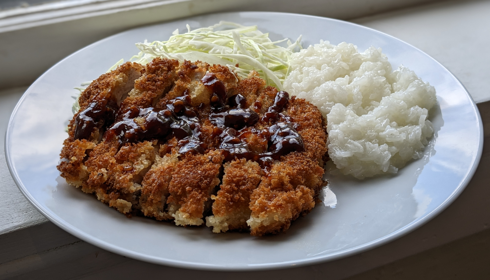

Tonkatsu

Author: Seasons & Suppers |
Cooked: September 3, 2022
Yields: 4 Servings | Prep Time: 15 Minutes | Cook Time: 30 Minutes
Ingredients
- 1/2 c. ketchup
- 3 Tbs Worcestershire sauce
- 3 Tbs granulated sugar
- 2 Tbs soy sauce
- 1 Tbs boiling water
- 2 tsp garlic, minced
- 1 tsp ginger, minced
- 1/4 tsp ground mustard --------------------------
- 4 thick boneless pork chops
- 2 tsp soy sauce
- 1 clove garlic, minced
- 1/2 tsp salt
- 1/4 tsp black pepper
- 1/2 c. all-purpose flour
- 2 eggs
- 2 Tbs water
- 1 1/2 c. panko bread crumbs
- Vegetable oil for cooking
Tonkatsu Sauce
Tonkatsu
Directions
- In a small saucepan, combine all tonkatsu sauce ingredients. Over medium heat, bring sauce to a boil. Reduce heat to low and allow to simmer for 8 minutes or until the sauce reduces by 25%.
- Remove sauce from heat and let cool. Sauce can be refrigerated for up to one week. --------------------------
Tonkatsu Sauce
- Using a meat tenderizer, flatten the pork chops to ~1/2" thick.
- Prepare four plates:
- 1 - Combine soy sauce, garlic, and half of the salt and pepper.
- 2 - Whisk together flour and remaining salt and pepper
- 3 - Whisk together eggs and water
- 4 - Panko bread crumbs
- In a non-stick skillet, add oil until it just covers the bottom of the skillet in a thin, even layer. Heat oil over medium heat.
- Working one-at-a-time, add a pork chop to the soy sauce plate and toss to coat. Next add it to the flour mixture being sure to coat the pork chop completely (each and every crevice) and shake off any excess. Now dip into the egg mixture letting any excess drip off. Finally, dip into the panko, patting to coat evenly. Set aside.
- Add a pork chop to the heated oil (or more than one if space allows) and cook until the underside is golden. Flip and fry the other side until golden and then remove from oil.
- Cut the tonkatsu into strips 1/2" - 1" wide.
Tonkatsu
Additional Notes
- This is traditionally served with shredded cabbage. I quartered a small cabbage, cut the core out of one of the quarters, and then sliced it on a mandoline.
- Tonkatsu curry is amazing. Next time I make this, I'll also whip up a curry sauce.